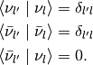

Neutrino¶
Neutrino is one of the most interesting particles in our world. The first proposal of such a new particle was given by Pauli. He managed to explain the spectrum of beta decay. In 1956, neutrinos was first detected in Cowan–Reines neutrino experiment.[1]_ Later on a lot of neutrino experiments have been carried out.

As far as we know, we have three flavours of neutrinos and their anti particles and they are orthogonal to each other,

The interesting thing about neutrinos is that it oscillates.
Table of Contents:
Support¶
Footnote¶
| [1] | Cowan–Reines neutrino experiment |